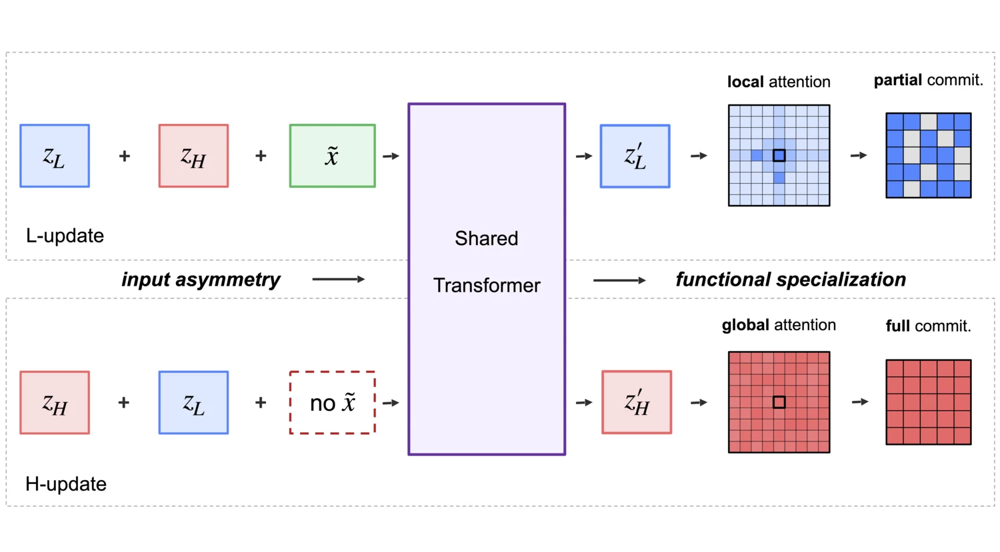
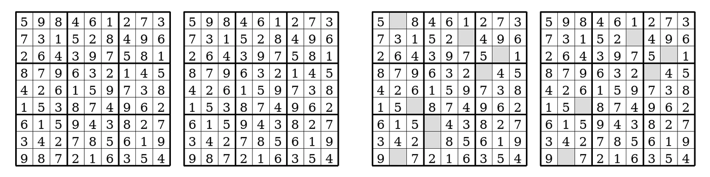
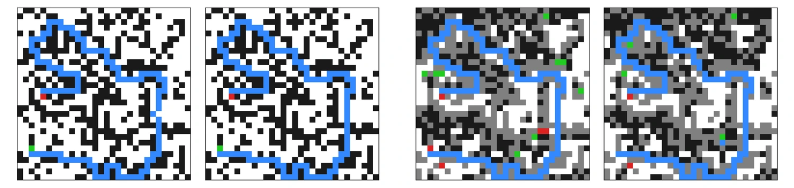
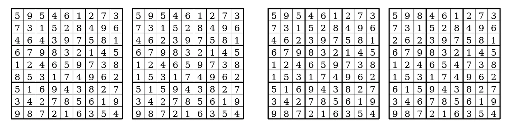
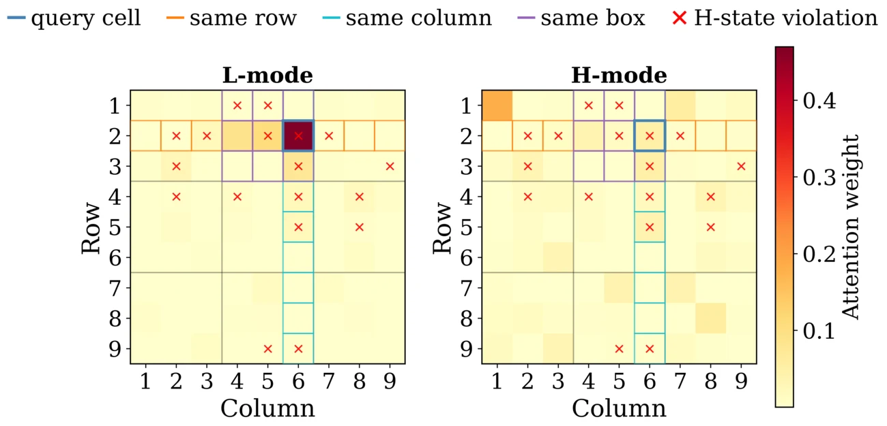

One Model, Two Roles
Emergent Specialization in a Shared Recurrent Transformer

In short: we reuse one Transformer to update two latent states, and only one of the updates sees the input. That single difference is enough for the two states to take on distinct roles. One always holds a complete candidate answer; the other keeps some positions undecided and attends more locally.
The question
Recurrent reasoning models such as HRM and TRM keep two latent states and update them in turn. HRM uses a separate network for each state, while TRM ties them into a single shared network. That raises a simple question: when the same model updates both states, does it learn two different jobs, or does it just process both states in the same way?
The answer tests whether specialization needs separate parameters at all, or whether one shared computation can specialize once it can tell which state it is updating.
A minimal testbed
We study this in Asymmetric Input Recurrence (AIR). It keeps two latent states, zH and zL, and one Transformer f with one set of parameters θ. The only built-in difference between the updates is whether the encoded input x̃ is added:
L-update: zL ← f(zL + zH + x̃; θ) H-update: zH ← f(zH + zL; θ)
The updates run in the order L, L, H, L, L, H within each cycle. Only zH is directly supervised, and the division of labor described below is not built into the update rule.

Two different-looking states
To see what each state holds, we decode both at every sub-step with the output head used at test time, on Sudoku-Extreme and on Maze. The same split appears in all five independently trained checkpoints per task:
- zH is fully committed: it always decodes to a complete candidate, even when that candidate is wrong.
- zL is partially committed: some positions stay undecided, and those positions move from one sub-step to the next.


Injecting the input into both updates nearly removes this split. zL no longer shows visible undecided regions, so the split is not simply a result of carrying two states.

The signal that matters
Our hypothesis is that the shared model needs a way to tell which state it is updating. To test it, we vary how many copies of the input each update receives.
| Configuration | Sudoku | Maze |
|---|---|---|
| Asymmetric input, shared model (6 variants, mean) | 59.1% | 73.1% |
| Symmetric input, shared model (2 variants, mean) | 51.5% | 69.9% |
| HRM, two separate networks | 55.0% | 74.5% |
Exact-solve accuracy. Shared-model variants use five seeds each. Group means are approximate.
On Sudoku the effect is clear: all 12 asymmetric-versus-symmetric comparisons stay significant after Holm correction. Maze is weaker: the average moves in the same direction, but only one of the 12 comparisons survives correction. The best AIR variants are comparable to the two-network HRM baseline, and exceed it on Sudoku, with half of its parameters.
The signal does not have to be the input. Starting from the symmetric model, a learned level token that is prepended, attended to, and then stripped raises Sudoku accuracy from 52.07% to 58.23%. Adding the same identity information element-wise to every token shows no detected improvement (50.91%). What seems to matter is a clear, separable signal of which state is being updated.
Local and global attention
The split also shows up in attention. L-updates attend more locally than H-updates on both tasks. On Sudoku, at the deepest layer and for control query cells, L places about 47% more attention mass than H on the cells that share a row, column, or box with the query. On Sudoku, L also puts extra attention on currently violated cells in deeper layers; on Maze, this extra attention is explained by locality alone.

The two states depend on each other
We also freeze one state and count how many decoded tokens change in the other. Freezing either state collapses final accuracy to 0% on both tasks, compared with 55.1% on Sudoku and 71.0% on Maze on the same puzzles when nothing is frozen. The other state's response depends on the task:
- Sudoku: freezing zH cuts total content changes in zL from 1258.2 to 239.5. Freezing zL has a seed-dependent effect on zH.
- Maze: freezing either state increases changes in the other, from 1345.8 to 5277.1 for zL (with substantial variation across seeds) and from 871.9 to 2400.0 for zH.
What this does and does not show
These results suggest that specialization does not require separate parameters. It requires a clear signal of which state is being updated, which can come from asymmetric input or from a separable level token.
The evidence has clear limits. We study two synthetic, fully observable grid tasks with a 4-layer Transformer and a one-step gradient, so this is not a claim of universality. The terms "fully committed" and "partially committed" describe how decoded states look, not what computation each state performs, and attention is only a partial view of that computation. A natural next step is to apply the same diagnostics to stronger two-state recurrent reasoners.
Citation
@inproceedings{shen2026onemodel,
title = {One Model, Two Roles: Emergent Specialization
in a Shared Recurrent Transformer},
author = {Shen, Jucheng and Su, Barbara and Kyrillidis, Anastasios},
booktitle = {Advances in Neural Information Processing Systems},
year = {2026}
}